Code
library(Seurat)
library(scCustomize)
library(tidyverse)
library(umap)
library(tidydr)
library(cowplot)
library(ggrepel)
library(pheatmap)
library(viridis)
library(sciRcolor)
source('bin/Palettes.R')library(Seurat)
library(scCustomize)
library(tidyverse)
library(umap)
library(tidydr)
library(cowplot)
library(ggrepel)
library(pheatmap)
library(viridis)
library(sciRcolor)
source('bin/Palettes.R')Adult.Ex <- readRDS('../data/rds/Adult.Ex.rds')
sp.PFC <- readRDS('../data/rds/sp.PFC.rds')Adult.Ex.barcode <- subset(
Adult.Ex,
cells=colnames(Adult.Ex)[which(Adult.Ex$BC_num>0)]
)
Adult.IT.PT.barcode <- subset(Adult.Ex, cells=colnames(Adult.Ex)[which(
(Adult.Ex$BC_num>0 & Adult.Ex$Ex_subtype == "IT") |
(Adult.Ex$BC_num>0 & Adult.Ex$Ex_subtype == "PT" & Adult.Ex$sample == "Adult1")
)])slice <- 'IT_slice_05'
barcode <- 'CP-I'
limits <- c(0,3)
seu <- subset(sp.PFC, cells=colnames(sp.PFC)[which(sp.PFC$ABA_hemisphere=="Left")])
df <- data.frame(
X = seu$X,
Y = seu$Y,
Zscore = scale(log1p(seu@meta.data[,barcode]))
)
df <- df[which(seu$slice==slice),]
df$Zscore[df$Zscore<limits[1]] <- limits[1]
df$Zscore[df$Zscore>limits[2]] <- limits[2]
df <- df[order(df$Zscore),]
FigureS5_A <-
ggplot(df, aes(x=X,y=Y)) +
geom_point(aes(colour=Zscore), size=1) +
scale_color_gradientn(colours = viridis(n = 256, option = "E", direction = 1),
limits = limits) +
ggdark::dark_theme_void() +
labs(title = "") +
theme(plot.title = element_blank(), legend.position = "none") +
coord_fixed()
FigureS5_A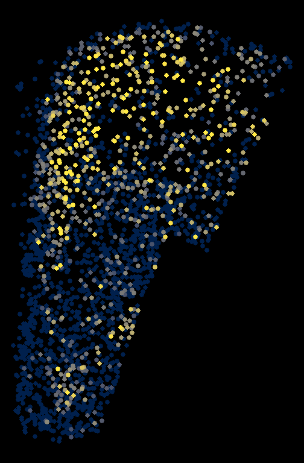
ggsave("../pdf/FigureS5/FigureS5_A/CP_slice05.png", plot = FigureS5_A,
height = 4, width = 4, units = "in")seu <- subset(sp.PFC, cells=colnames(sp.PFC)[which(sp.PFC$ABA_hemisphere=="Left")])
slice <- unique(seu$slice)
df <- data.frame('slice'=slice)
for (i in 1:length(slice)){
df$`ACB-I`[i] <- length(which(seu$slice==slice[i] &
seu$`ACB-I`>0))/
length(which(seu$slice==slice[i] & seu$BC_num>0))
df$`CP-I`[i] <- length(which(seu$slice==slice[i] &
seu$`CP-I`>0))/
length(which(seu$slice==slice[i] & seu$BC_num>0))
}
df$x <- c(1:36)
df <- pivot_longer(df, 2:3, names_to = "target", values_to = "value")
# RSP.I="#6BD76BFF" BLA="#D595A7FF"
FigureS5_B_1 <-
ggplot(df, aes(x=x, y=value, color=target)) +
#geom_line(color="#D595A7FF",size=1) +
geom_point(alpha=0.5, size=3) +
geom_smooth(se = F, linewidth=1.5) +
theme_bw() +
scale_x_continuous(breaks = seq(0,35,5)) +
scale_color_manual(values = c('ACB-I'="#ff7f0e", 'CP-I'="#1f77b4")) +
theme(text = element_text(size=15),
plot.title = element_text(size = 20, hjust = 0.5)) +
labs(x='A → P',y='Cell proportion')
FigureS5_B_1`geom_smooth()` using method = 'loess' and formula = 'y ~ x'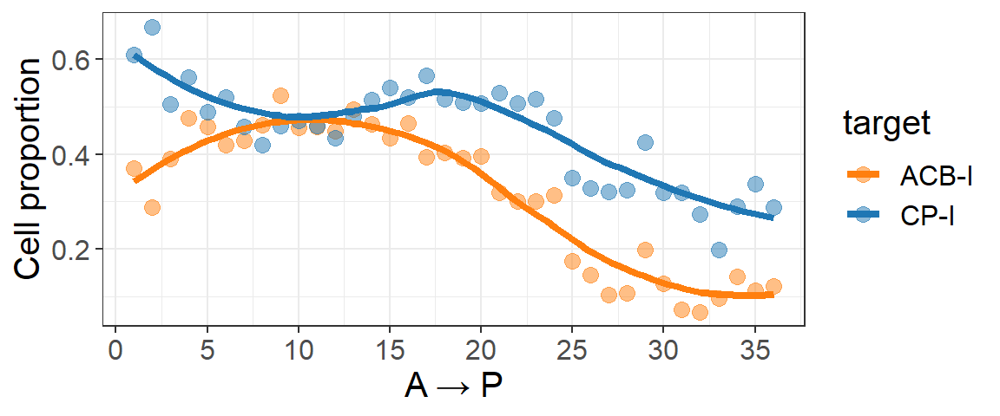
ggsave("../pdf/FigureS5/FigureS5_B_1.pdf", plot = FigureS5_B_1,
height = 2.5, width = 6, units = "in")barcode <- c("VIS-I","ACB-I","AId-I","CP-I","ECT-I",
"BLA-I","AUD-I","SSp-I","RSP-I","LHA-I")
seu <- subset(sp.PFC, cells=colnames(sp.PFC)[which(sp.PFC$ABA_hemisphere=="Left")])
bc_slice <- seu@meta.data[,c(barcode, 'Y','BC_num')]
bc_slice <-
bc_slice |>
mutate(bin = cut(Y, breaks = 36))
bin <- sort(unique(bc_slice$bin))
bc_slice$bin_index <- match(bc_slice$bin, bin)
df <- data.frame('bin_index'=c(1:36))
for (i in 1:36){
df$`ACB-I`[i] <- length(which(bc_slice$bin_index==i & bc_slice$`ACB-I`>0))/
length(which(bc_slice$bin_index==i & bc_slice$BC_num>0))
df$`CP-I`[i] <- length(which(bc_slice$bin_index==i &
bc_slice$`CP-I`>0))/
length(which(bc_slice$bin_index==i & bc_slice$BC_num>0))
}
df$x <- c(1:36)
df <- pivot_longer(df, 2:3, names_to = "target", values_to = "value")
# RSP.I="#6BD76BFF" BLA="#D595A7FF"
FigureS5_B_2 <-
ggplot(df, aes(x=x, y=value, color=target)) +
#geom_line(color="#D595A7FF",size=1) +
geom_point(alpha=0.5, size=3) +
geom_smooth(se = F, linewidth=1.5) +
theme_bw() +
scale_x_continuous(breaks = seq(0,35,5)) +
scale_color_manual(values = c('ACB-I'="#ff7f0e", 'CP-I'="#1f77b4")) +
theme(text = element_text(size=15),
plot.title = element_text(size = 20, hjust = 0.5)) +
labs(x='V → D',y='Cell proportion')
FigureS5_B_2`geom_smooth()` using method = 'loess' and formula = 'y ~ x'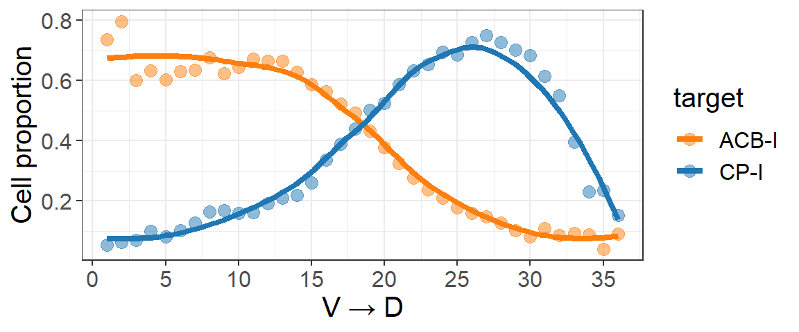
ggsave("../pdf/FigureS5/FigureS5_B_2.pdf", plot = FigureS5_B_2,
height = 2.5, width = 6, units = "in")library(networkD3)
IT_SubType <- c("L2/3_IT_1", "L4/5_IT_1", "L5_IT_1", "L6_IT_1",
"L2/3_IT_2","L4/5_IT_2", "L5_IT_2", "L6_IT_2")
seu <- subset(Adult.IT.PT.barcode, cells=colnames(Adult.IT.PT.barcode)[which(Adult.IT.PT.barcode$SubType %in% IT_SubType)])
mat <- matrix(nrow = 2, ncol = length(IT_SubType))
rownames(mat) <- c("CP-I", "ACB-I")
colnames(mat) <- IT_SubType
for (i in 1:2){
mat[i,] <- as.numeric(table(seu$SubType[which(seu@meta.data[,rownames(mat)[i]]>0)])[IT_SubType])
}
mat <- mat/rowSums(mat)
mat <- as.data.frame(mat)
mat$Target <- rownames(mat)
links <- pivot_longer(mat, !Target, names_to = "SubType", values_to = "value")
colnames(links) <- c('target', 'source', 'value')
links <- links[which(links$value != 0),]
nodes <- c(IT_SubType,"CP-I","ACB-I")
nodes <- data.frame(name=nodes)
nodes$index <- 0:(nrow(nodes) - 1)
links <- merge(links, nodes, by.x="source", by.y="name")
links <- merge(links, nodes, by.x="target", by.y="name")
names(links) <- c("target","source","Value","IDsource","IDtarget")
nodes.colour <- c(
"L2/3_IT_1"='#ffd600',"L4/5_IT_1"='#ff6d00',"L5_IT_1"='#0091ea',"L6_IT_1"='#c51162',"L2/3_IT_2"='#ffff8d',"L4/5_IT_2"='#ffd180',"L5_IT_2"='#80d8ff',"L6_IT_2"='#ff80ab',"CP-I"="#1f77b4","ACB-I"="#ff7f0e")
pastecolor <- paste('d3.scaleOrdinal() .domain(["', nodes$name[1], sep = '')
for (i in 2:length(nodes$name)){
pastecolor <- paste(pastecolor, '", "', nodes$name[i], sep = '')
}
pastecolor <- paste(pastecolor, '"]) .range(["', sep = '')
pastecolor <- paste(pastecolor, nodes.colour[1], sep = '')
for (i in 2:length(nodes.colour)){
pastecolor <- paste(pastecolor,'", "', nodes.colour[i], sep = '')
}
pastecolor <- paste(pastecolor,'"])', sep = '')
colourScale <- pastecolor
links$Group <- links$target
links$Group <- as.factor(links$Group)
colnames(links) <- c("source", "target", "Value", "IDtarget", "IDsource", "Group")
FigureS5_C <-
sankeyNetwork(Links=links, Nodes=nodes, Source="IDsource", Target="IDtarget",
Value="Value", NodeID="name", fontSize=20,
nodeWidth=30, nodePadding=10, margin=NULL,
height=600, width=400, sinksRight=TRUE,
colourScale=colourScale, LinkGroup="Group",iterations=0)
FigureS5_CsaveNetwork(FigureS5_C,"../pdf/FigureS5/FigureS5_C/FigureS5_C.html")#seu <- Adult.IT.PT.barcode
#ACB_I <- colnames(seu)[which(seu$`ACB-I`>0 & seu$`CP-I`==0)]
#CP_I <- colnames(seu)[which(seu$`CP-I`>0 & seu$`ACB-I`==0)]
#DEGs <- FindMarkers(seu, ident.1 = ACB_I, ident.2 = CP_I, logfc.threshold = 0)
#saveRDS(DEGs, '../data/rds/DEGs_ACB_VS_CP.rds')
DEGs <- readRDS('../data/rds/DEGs_ACB_VS_CP.rds')DEGs$label <- ""
top5_gene <- rownames(DEGs)[which(DEGs$avg_log2FC>0.5 & DEGs$p_val_adj<1e-2)]
if(length(top5_gene)>5){
top5_gene <- top5_gene[1:5]
}
down5_gene <- rownames(DEGs)[which(DEGs$avg_log2FC < -0.5 &
DEGs$p_val_adj < 1e-2)]
if(length(down5_gene)>5){
down5_gene <- down5_gene[1:5]
}
#top5_gene <- c(top5_gene,"Cnr1")
#down5_gene <- c(down5_gene,"Bdnf")
DEGs$label[match(top5_gene, rownames(DEGs))] <- top5_gene
DEGs$label[match(down5_gene, rownames(DEGs))] <- down5_gene
DEGs$Type <- 'not significant'
DEGs$Type[which(DEGs$avg_log2FC>0.5 & DEGs$p_val_adj<1e-2)] <- "Up"
DEGs$Type[which(DEGs$avg_log2FC < -0.5 & DEGs$p_val_adj<1e-2)] <- "Down"
FigureS5_D <-
ggplot(DEGs, aes(x=avg_log2FC, y= -log10(p_val_adj))) +
geom_point(aes(color=Type), size=0.5) +
geom_vline(aes(xintercept=0.5), colour="black", linetype="dashed",
linewidth = 0.5) +
geom_vline(aes(xintercept = -0.5), colour="black", linetype="dashed",
linewidth = 0.5) +
geom_text_repel(aes(label=label, color=Type), size=3, max.overlaps=100) +
theme_classic() +
theme(plot.title = element_text(size = 20, hjust = 0.5),
text = element_text(size = 15), legend.position = "none") +
scale_color_manual(values = c("Up"='#c82423', "Down"='#2878b5',
'not significant'='lightgray')) +
xlim(min(DEGs$avg_log2FC), max(DEGs$avg_log2FC)) +
ylim(0,270) +
labs(title = "", x = 'log2FC', y = '-log10(P value)')
FigureS5_D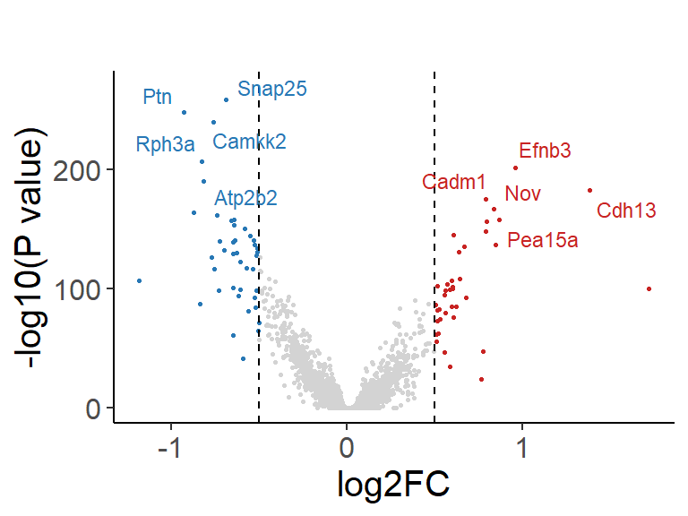
ggsave("../pdf/FigureS5/FigureS5_D.pdf", plot = FigureS5_D,
height = 3, width = 4, units = "in")#cluster_order <- c("CP-I","CP-I + CP-C","CP-I + RSP-I","CP-I + AUD-I", "SSp-I", "PL-C", "PL-C + CP-I", "PL-C + CP-C", "CP-C", "CP-C + ACB-I", "ACB-C", "AUD-I", "RSP-I", "RSP-I + ACB-I", "LHA-I", "DR-I", "VTA-I", "ECT-I", "BLA-I","BLA-I + ACB-I", "VIS-I", "ACB-I + AId-I","ACB-I + PL-C","ACB-I + CP-I","ACB-I","AId-I + CP-I","AId-I", "ECT-C", "AId-C")
BC_order <- c("AId-C","ECT-C","ENTl-C","ENTl-I","DR-I","LHA-I","VTA-I","RE-I","SC-I","MD-I","AId-I","PL-C","VIS-I","BLA-I","BLA-C","ECT-I","SSp-I","ACB-I","CP-I","ACB-C","RSP-I","RSP-C","AUD-I","CP-C")
Ex_BC_mat <- Adult.Ex.barcode@meta.data[,BC_order]
Ex_BC_mat[is.na(Ex_BC_mat)] <- 0
annotation_row <- data.frame(
Subtype = factor(Adult.Ex.barcode$Proj_subtype, levels = 1:33),
Module = factor(Adult.Ex.barcode$Proj_module,
levels = c('ITi-D', 'ITi-V', 'ITc', 'PTi'))
)
rownames(annotation_row) <- rownames(Ex_BC_mat)
annotation_colors = list(
Subtype = col_Proj_subtype,
Module = col_Proj_module
)
FigureS5_E <-
pheatmap(Ex_BC_mat[,BC_order],
cluster_rows = T, cluster_cols = F,
show_rownames=F,
color = colorRampPalette(c("white", "red"))(50),
annotation_row = annotation_row, annotation_colors = annotation_colors,
fontsize = 10)
FigureS5_E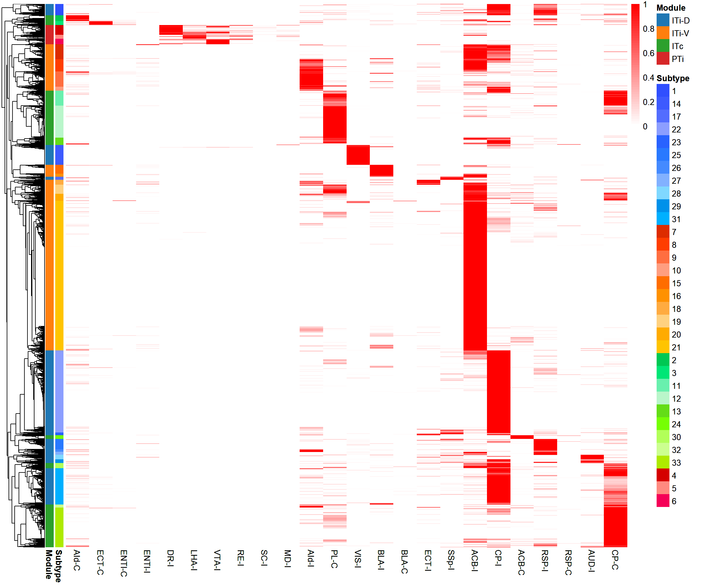
ggsave("../pdf/FigureS5/FigureS5_E.pdf", plot = FigureS5_E,
height = 10, width = 12, units = "in")BC_order <- c('CP-I','VIS-I','SSp-I','RSP-I','AUD-I',
'ACB-I','AId-I','BLA-I','ECT-I','ENTl-I',
'AId-C','ECT-C','ENTl-C','PL-C','ACB-C','CP-C','BLA-C','RSP-C',
'DR-I','SC-I','LHA-I','RE-I','MD-I','VTA-I')
seu <- Adult.Ex.barcode
seu@meta.data[,BC_order][is.na(seu@meta.data[,BC_order])] <- 0
seu$Proj_subtype <- factor(
seu$Proj_subtype,
levels = c(1,14,17,22,23,25,26,27,28,29,31,
7,8,9,10,15,16,18,19,20,21,
2,3,11,12,13,24,30,32,33,
4,5,6))
FigureS5_F <-
DotPlot(seu, features = BC_order, group.by = 'Proj_subtype',
cols = c("lightgrey", "red")) +
coord_flip() +
scale_x_discrete(limits=rev) +
theme_bw() +
theme(axis.text.x = element_text(angle = 0, hjust = 0)) +
labs(x='', y='')
FigureS5_F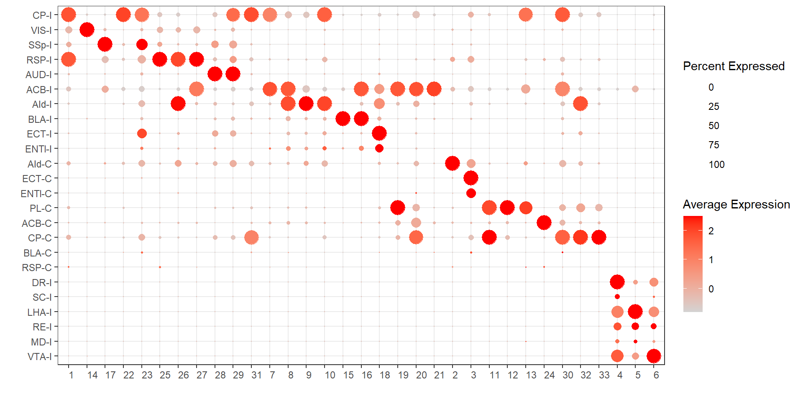
ggsave("../pdf/FigureS5/FigureS5_F.pdf", plot = FigureS5_F,
height = 5, width = 10, units = "in")Barcode_order <- c('MD-I','RE-I','DR-I','VTA-I','LHA-I','SC-I',
'VIS-I','SSp-I','CP-I','AUD-I','RSP-I',
'BLA-I','ACB-I','ENTl-I','AId-I','ECT-I',
'ACB-C','PL-C','ECT-C','ENTl-C',
'BLA-C','CP-C','AId-C','RSP-C'
)
Ex_BC_mat <- Adult.IT.PT.barcode@meta.data[,c(Barcode_order,'Proj_module')]
BC_module_mat <-
Ex_BC_mat |>
group_by(Proj_module) |>
dplyr::summarize(across(1:24, ~ mean(.x, na.rm = TRUE))) |>
mutate_all(~replace(., is.na(.), 0))
BC_module_zscore <- scale(BC_module_mat[,2:25])
rownames(BC_module_zscore) <- BC_module_mat$Proj_module
breaks <- seq(0,1,0.01)
FigureS5_G <-
pheatmap(BC_module_zscore[c('PTi','ITi-D','ITi-V','ITc'),Barcode_order],
cluster_rows = F, cluster_cols = F,
show_colnames=T, show_rownames = T,
breaks = breaks,
color = colorRampPalette(c("white","firebrick3"))(length(breaks))
)
FigureS5_G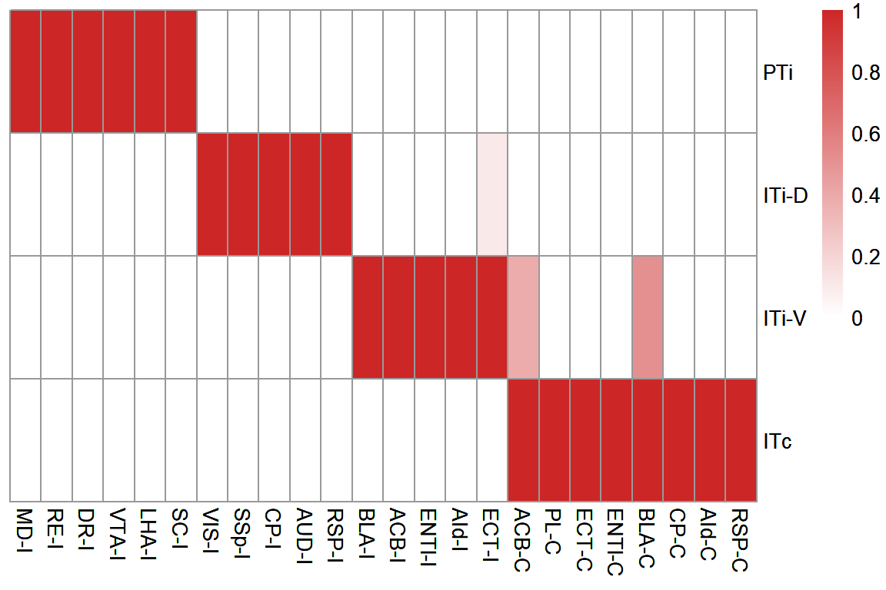
ggsave("../pdf/FigureS5/FigureS5_G.pdf", plot = FigureS5_G,
height = 4, width = 6, units = "in")UMAP <- Adult.IT.PT.barcode@reductions$umap@cell.embeddings
seu <- subset(Adult.IT.PT.barcode,
cells = colnames(Adult.IT.PT.barcode)[which(UMAP[,'UMAP_1']<1)])
p1 <- Plot_Density_Custom(
seurat_object = seu, features = 'ITi_D_score',
custom_palette = colorRampPalette(c("#eeeded","#f0de36","#d71313"))(100)) +
theme_void() +
theme(plot.title = element_text(size = 30, hjust = 0.5)) +
labs(title = "ITi-D")
p2 <- Plot_Density_Custom(
seurat_object = seu, features = 'ITi_V_score',
custom_palette = colorRampPalette(c("#eeeded","#f0de36","#d71313"))(100)) +
##scale_colour_gradientn(colours = c("lightgray","yellow", "orange","darkred")) +
theme_void() +
theme(plot.title = element_text(size = 30, hjust = 0.5)) +
labs(title = "ITi-V")
p3 <- Plot_Density_Custom(
seurat_object = seu, features = 'ITc_score',
custom_palette = colorRampPalette(c("#eeeded","#f0de36","#d71313"))(100)) +
theme_void() +
theme(plot.title = element_text(size = 30, hjust = 0.5)) +
labs(title = "ITc")
seu$PTi_score[is.nan(seu$PTi_score)] <- 0
p4 <- Plot_Density_Custom(
seurat_object = seu, features = 'PTi_score',
custom_palette = colorRampPalette(c("#eeeded","#f0de36","#d71313"))(100)) +
theme_void() +
theme(plot.title = element_text(size = 30, hjust = 0.5)) +
labs(title = "PTi")
FigureS5_H <- plot_grid(p1,p2,p3,p4,ncol = 4)
FigureS5_H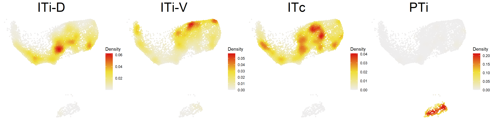
ggsave("../pdf/FigureS5/FigureS5_H.pdf", plot = FigureS5_H,
height = 4, width = 16, units = "in")#seu <- Adult.IT.PT.barcode
#Idents(seu) <- "Proj_module"
#DEGs <- FindAllMarkers(seu, logfc.threshold = 0.25, min.pct = 0.1)
#DEGs$p_val_adj[which(DEGs$p_val_adj==0)] <- 1e-290
#saveRDS(DEGs, '../data/rds/DEGs_Proj_module.rds')
DEGs <- readRDS('../data/rds/DEGs_Proj_module.rds')proj_module <- c("ITi-D","ITi-V","ITc","PTi")
plist <- list()
for (i in 1:4){
DEGs_module <- DEGs[DEGs$cluster == proj_module[i],]
DEGs_module$label <- ""
top5_gene <- DEGs_module$gene[which(DEGs_module$avg_log2FC>0.5 &
DEGs_module$p_val_adj<1e-2)]
if(length(top5_gene)>5){
top5_gene <- top5_gene[1:5]
}
down5_gene <- DEGs_module$gene[which(DEGs_module$avg_log2FC< -0.5 &
DEGs_module$p_val_adj<1e-2)]
if(length(down5_gene)>5){
down5_gene <- down5_gene[1:5]
}
DEGs_module$label[match(top5_gene, DEGs_module$gene)] <- top5_gene
DEGs_module$label[match(down5_gene, DEGs_module$gene)] <- down5_gene
DEGs_module$Type <- 'not significant'
DEGs_module$Type[which(DEGs_module$avg_log2FC>0.5 &
DEGs_module$p_val_adj<1e-2)] <- "Up"
DEGs_module$Type[which(DEGs_module$avg_log2FC < -0.5 &
DEGs_module$p_val_adj<1e-2)] <- "Down"
plist[[i]] <-
ggplot(DEGs_module, aes(x=avg_log2FC, y= -log10(p_val_adj))) +
geom_point(aes(color=Type), size=0.5) +
geom_vline(aes(xintercept=0.5), colour="black", linetype="dashed",
linewidth = 0.5) +
geom_vline(aes(xintercept = -0.5), colour="black", linetype="dashed",
linewidth = 0.5) +
geom_text_repel(aes(label=label, color=Type), size=3, max.overlaps=100) +
theme_classic() +
theme(plot.title = element_text(size = 20, hjust = 0.5),
text = element_text(size = 15), legend.position = "none") +
scale_color_manual(values = c("Up"='#c82423', "Down"='#2878b5',
'not significant'='lightgray')) +
xlim(min(DEGs_module$avg_log2FC), max(DEGs_module$avg_log2FC)) +
ylim(0,300) +
labs(title = proj_module[i], x = 'log2FC', y = '-log10(P value)')
}
FigureS5_I <- plot_grid(plotlist = plist, ncol = 2)
FigureS5_I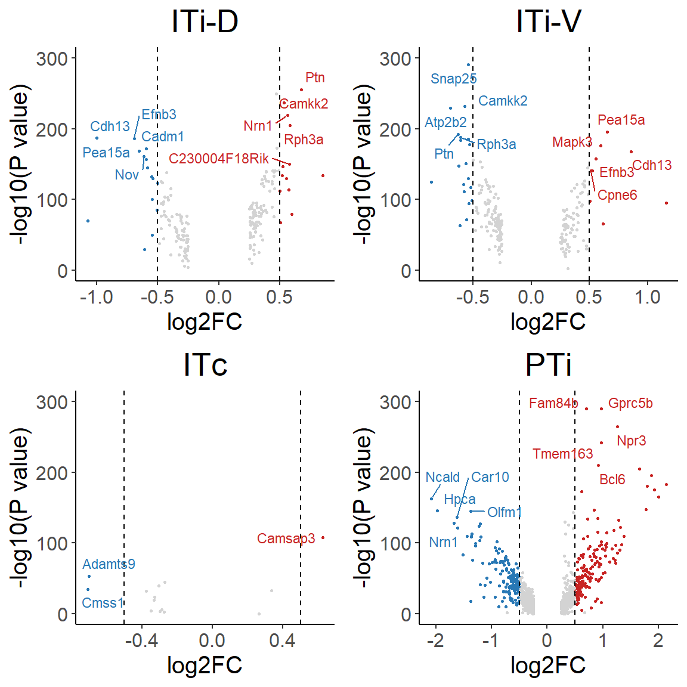
ggsave("../pdf/FigureS5/FigureS5_I.pdf", plot = FigureS5_I,
height = 6, width = 6, units = "in")seu <- Adult.IT.PT.barcode
df <- table(seu$SubType_Layer, seu$Proj_subtype)
df_norm <- as.data.frame(apply(df, 2, function(x){x/sum(x)}))
df_norm$Layer <- rownames(df_norm)
df_plot <-
df_norm |>
pivot_longer(!Layer, names_to = "Proj_cluster", values_to = "value")
df_plot$Proj_cluster <- factor(
df_plot$Proj_cluster,
levels = names(sort(colSums(df_norm[1:2,1:(ncol(df_norm)-1)]), decreasing = T)))
df_plot$Layer <- factor(
df_plot$Layer,
levels = c("L2/3 IT","L4/5 IT","L5 IT","L6 IT","L5 PT"))
FigureS5_J <-
ggplot(data=df_plot, aes(x=Proj_cluster, y=value, fill=Layer)) +
geom_bar(stat="identity", width=0.7) +
theme_classic() +
theme(axis.text.x = element_text(angle = 45, hjust = 1)) +
scale_fill_manual(values = col_SubType_Layer) +
labs(x='', y='')
FigureS5_J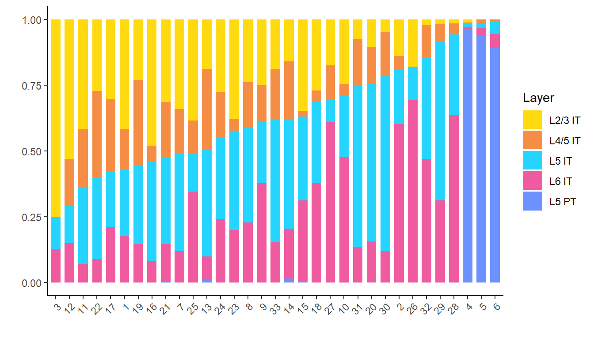
ggsave("../pdf/FigureS5/FigureS5_J.pdf", plot = FigureS5_J,
height = 4, width = 7, units = "in")seu <- Adult.IT.PT.barcode
df <- table(seu$SubType, seu$Proj_subtype)
df_norm <- apply(df, 2, function(x){x/sum(x)})
df_plot <- as.data.frame(df_norm)
df_plot$Cluster <- rownames(df_plot)
df_plot <-
df_plot |>
pivot_longer(!Cluster, names_to = "Proj_cluster", values_to = "Value")
df_plot$Cluster <- factor(
df_plot$Cluster,
levels = c('L2/3_IT_1', 'L4/5_IT_1', 'L5_IT_1', 'L6_IT_1',
'L2/3_IT_2', 'L4/5_IT_2', 'L5_IT_2', 'L6_IT_2',
"L5_PT_1","L5_PT_2")
)
df_plot$Proj_cluster <- factor(
df_plot$Proj_cluster,
levels = names(sort(colSums(df_norm[c(1,3,5,9),]),decreasing = T))
)
FigureS5_K <-
ggplot(data=df_plot, aes(x=Proj_cluster, y=Value, fill=Cluster)) +
geom_bar(stat="identity", width=0.7) +
theme_classic() +
theme(axis.text.x = element_text(angle = 90, hjust = 1)) +
scale_fill_manual(values = col_SubType) +
labs(x='', y='')
FigureS5_K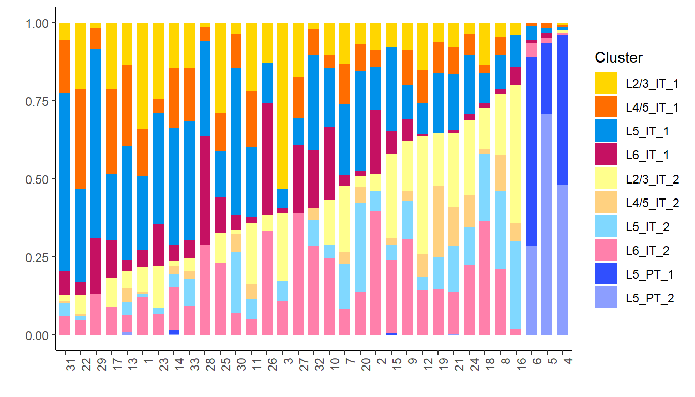
ggsave("../pdf/FigureS5/FigureS5_K.pdf", plot = FigureS5_K,
height = 4, width = 7, units = "in")slice <- 'IT_slice_05'
## ITi_D ITi_V ITc PTi
barcode <- 'PTi'
limits <- c(0,2)
seu <- subset(sp.PFC, cells=colnames(sp.PFC)[which(sp.PFC$ABA_hemisphere=="Left")])
seu$PTi[is.na(seu$PTi)] <- 0
seu$ITi_D[is.na(seu$ITi_D)] <- 0
seu$ITi_V[is.na(seu$ITi_V)] <- 0
seu$ITc[is.na(seu$ITc)] <- 0
df <- data.frame(
X = seu$X,
Y = seu$Y,
Zscore = scale(log1p(seu@meta.data[,barcode]))
)
df <- df[which(seu$slice==slice),]
df$Zscore[df$Zscore<limits[1]] <- limits[1]
df$Zscore[df$Zscore>limits[2]] <- limits[2]
df <- df[order(df$Zscore),]
FigureS5_L <-
ggplot(df, aes(x=X,y=Y)) +
geom_point(aes(colour=Zscore), size=1) +
scale_color_gradientn(colours = viridis(n = 256, option = "E", direction = 1),
limits = limits) +
ggdark::dark_theme_void() +
theme(plot.title = element_blank(), legend.position = "none") +
coord_fixed()
FigureS5_L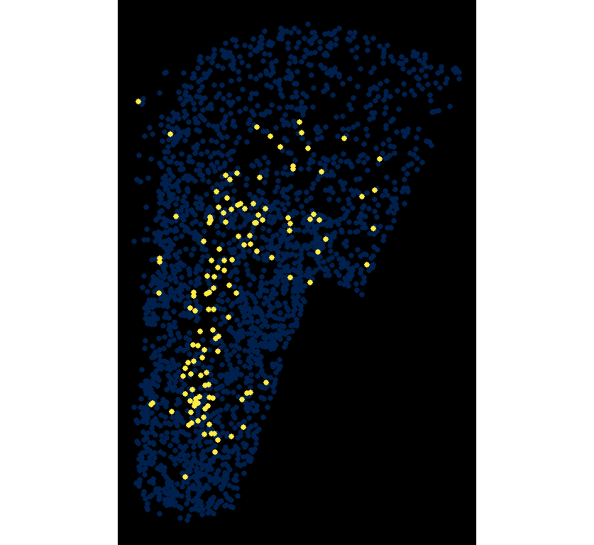
ggsave("../pdf/FigureS5/FigureS5_L/PTi_slice05.png", plot = FigureS5_L,
height = 4, width = 3, units = "in")seu <- sp.PFC
slice <- unique(seu$slice)
df <- data.frame('slice'=slice)
for (i in 1:length(slice)){
df$`ITi-D`[i] <- length(which(seu$slice==slice[i] &
seu$ITi_D>0))/
length(which(seu$slice==slice[i] & seu$BC_num>0))
df$`ITi-V`[i] <- length(which(seu$slice==slice[i] &
seu$ITi_V>0))/
length(which(seu$slice==slice[i] & seu$BC_num>0))
df$`ITc`[i] <- length(which(seu$slice==slice[i] &
seu$ITc>0))/
length(which(seu$slice==slice[i] & seu$BC_num>0))
df$`PTi`[i] <- length(which(seu$slice==slice[i] &
seu$PTi>0))/
length(which(seu$slice==slice[i] & seu$BC_num>0))
}
df$x <- c(1:36)
df <- pivot_longer(df, 2:5, names_to = "target", values_to = "value")
# RSP.I="#6BD76BFF" BLA="#D595A7FF"
FigureS5_M_1 <-
ggplot(df, aes(x=x, y=value, color=target)) +
#geom_line(color="#D595A7FF",size=1) +
geom_point(alpha=0.5, size=3) +
geom_smooth(se = F, linewidth=1.5) +
theme_bw() +
scale_x_continuous(breaks = seq(0,35,5)) +
scale_color_manual(values = col_Proj_module) +
theme(text = element_text(size=15),
plot.title = element_text(size = 20, hjust = 0.5)) +
labs(x='A → P',y='Cell proportion')
FigureS5_M_1`geom_smooth()` using method = 'loess' and formula = 'y ~ x'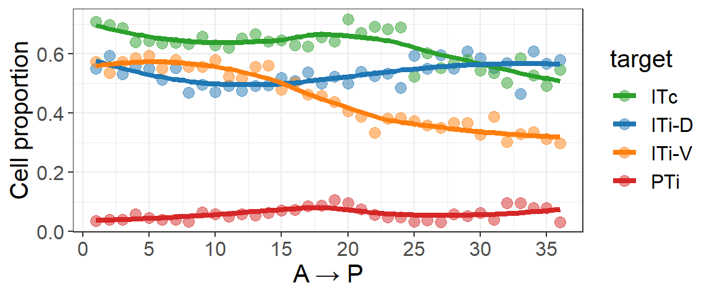
ggsave("../pdf/FigureS5/FigureS5_M_1.pdf", plot = FigureS5_M_1,
height = 2.5, width = 6, units = "in")bc_slice <- seu@meta.data[,c(c("ITi_D", "ITi_V", "ITc", "PTi"), 'Y','BC_num')]
bc_slice <-
bc_slice |>
mutate(bin = cut(Y, breaks = 36))
bin <- sort(unique(bc_slice$bin))
bc_slice$bin_index <- match(bc_slice$bin, bin)
df <- data.frame('bin_index'=c(1:36))
for (i in 1:36){
df$`ITi-D`[i] <- length(which(bc_slice$bin_index==i & bc_slice$ITi_D>0))/
length(which(bc_slice$bin_index==i & bc_slice$BC_num>0))
df$`ITi-V`[i] <- length(which(bc_slice$bin_index==i & bc_slice$ITi_V>0))/
length(which(bc_slice$bin_index==i & bc_slice$BC_num>0))
df$`ITc`[i] <- length(which(bc_slice$bin_index==i & bc_slice$ITc>0))/
length(which(bc_slice$bin_index==i & bc_slice$BC_num>0))
df$`PTi`[i] <- length(which(bc_slice$bin_index==i & bc_slice$PTi>0))/
length(which(bc_slice$bin_index==i & bc_slice$BC_num>0))
}
df$x <- c(1:36)
df <- pivot_longer(df, 2:5, names_to = "target", values_to = "value")
# RSP.I="#6BD76BFF" BLA="#D595A7FF"
FigureS5_M_2 <-
ggplot(df, aes(x=x, y=value, color=target)) +
#geom_line(color="#D595A7FF",size=1) +
geom_point(alpha=0.5, size=3) +
geom_smooth(se = F, linewidth=1.5) +
theme_bw() +
scale_x_continuous(breaks = seq(0,35,5)) +
scale_color_manual(values = col_Proj_module) +
theme(text = element_text(size=15),
plot.title = element_text(size = 20, hjust = 0.5)) +
labs(x='D → V',y='Cell proportion') +
xlim(36, 0)
FigureS5_M_2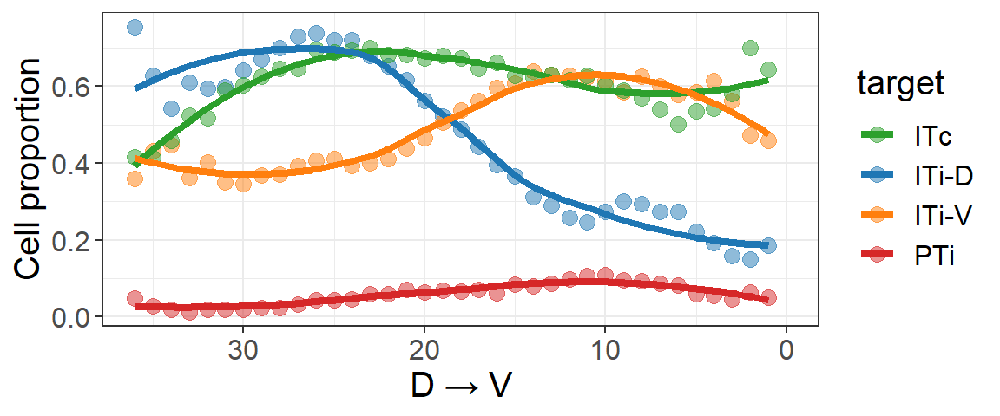
ggsave("../pdf/FigureS5/FigureS5_M_2.pdf", plot = FigureS5_M_2,
height = 2.5, width = 6, units = "in")